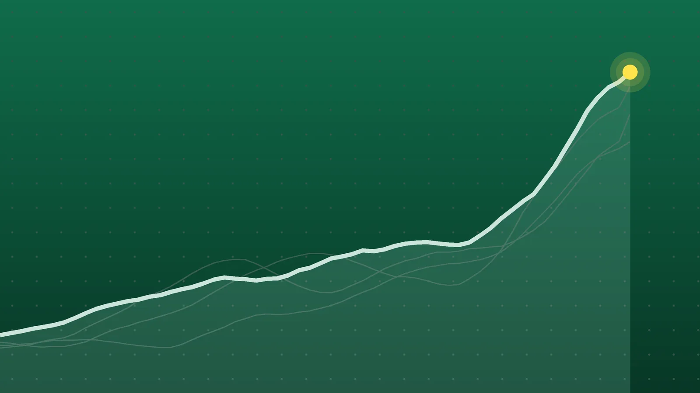

SportsExplainer
NBA Scores, Oct. 21: Edwards’ 45 Spoils Giannis’ Heat Debut
Twenty-two teams opened their seasons on the same night. Two players hit 45, three stars made debuts with new teams, and four games were decided by 25 points or more.

Quick take
- Minnesota beat Miami 131-106 as Anthony Edwards scored 45 points with nine 3-pointers, spoiling Giannis Antetokounmpo’s first game for the Heat.
- Ty Jerome scored a career-high 45 in Memphis’ 123-103 win over Utah, the most by a Grizzlies player in a season opener.
- Toronto beat Chicago 135-92, and Portland beat Phoenix 124-83 after leading by as many as 52 points.
- None of the 11 games went to overtime. Every winner is 1-0 after its first game.
Why it's trending Eleven NBA games on Wednesday, Oct. 21, opened the season for 22 teams, with several stars debuting for new clubs.
NBA scores for Oct. 21
The biggest night of the NBA’s opening week belonged to two guards who each scored 45. In Miami, Anthony Edwards made nine 3-pointers and Minnesota beat the Heat 131-106, spoiling Giannis Antetokounmpo’s first game in a Heat uniform. In Memphis, Ty Jerome set a career high as the Grizzlies beat Utah 123-103.
Wednesday’s 11 games were the season openers for 22 teams. Several were lopsided: Toronto beat Chicago by 43, the season’s widest margin so far, and Portland beat Phoenix by 41. The closest finish came in New Orleans, where Indiana held on 123-120 in Tyrese Haliburton’s return. No game went to overtime, Land of Basketball’s daily summary shows.
All final scores
| Winner | Score | Loser | Note |
|---|---|---|---|
| Atlanta Hawks | 132-125 | at Orlando Magic | Nickeil Alexander-Walker 31; Paolo Banchero 35 for Orlando |
| Washington Wizards | 128-116 | Milwaukee Bucks | Anthony Davis 34 points, 12 rebounds in his Wizards debut |
| Charlotte Hornets | 110-103 | at Brooklyn Nets | Grayson Allen 21 off the bench; Julius Randle 33 in his Nets debut |
| Minnesota Timberwolves | 131-106 | at Miami Heat | Anthony Edwards 45; Antetokounmpo 35 in his Heat debut |
| Toronto Raptors | 135-92 | Chicago Bulls | Kawhi Leonard 23 in his Toronto return; Bulls had 27 turnovers |
| Memphis Grizzlies | 123-103 | Utah Jazz | Ty Jerome career-high 45 |
| Indiana Pacers | 123-120 | at New Orleans Pelicans | Pascal Siakam 30, 18 of them in the fourth |
| Houston Rockets | 128-110 | Dallas Mavericks | Kevin Durant and Jabari Smith Jr. 30 each; Cooper Flagg 32 |
| Los Angeles Lakers | 127-105 | Golden State Warriors | Walker Kessler 26 on 12-of-12 shooting; Luka Dončić 28 |
| Portland Trail Blazers | 124-83 | Phoenix Suns | Damian Lillard 25; Blazers opened on a 21-0 run |
| Los Angeles Clippers | 121-96 | Sacramento Kings | Darius Garland 30; Clippers never trailed |
Home teams went 7-4.
Edwards outguns the Heat’s new star
Antetokounmpo did his part in his Miami debut, scoring 35, but Minnesota had too much shooting. Edwards hit 16 of 29 shots, 9 of 17 from 3-point range, and grabbed 10 rebounds, according to SB Nation’s recap on Yahoo Sports. The Wolves also won the rebounding battle 52-34. LaMelo Ball added 21 in his first game for Minnesota, WPLG Local 10 reported.
SB Nation noted that Edwards joined Michael Jordan and Wilt Chamberlain as the only players with 40-point games in more than one season opener. Minnesota plays at Orlando on Friday.
Jerome’s record night in Memphis
Jerome’s previous career best was 33. He beat it by 12, hitting 17 of 25 shots, and his 45 broke Ja Morant’s Memphis record for a season opener of 44 from 2020, AP reported. The game turned at the start of the third quarter, when an 18-4 Grizzlies run made it 82-55. The Grizzlies’ biggest lead reached 27.
Keyonte George scored 22 for Utah, and Jaren Jackson Jr. had 15 against his former team before fouling out.
Davis takes over late in Washington
Washington’s win came from a fourth-quarter surge. The Wizards led 93-90 after three, then made its first nine shots of the final quarter, Field Level Media reported, and a run in the period pushed the lead to 111-98. Davis finished with 34 points and 12 rebounds, and Trae Young had 20 points and 13 assists. Tyler Herro scored 24 for the Bucks in Taylor Jenkins’ first game as Milwaukee’s coach.
In Los Angeles, the Lakers opened their first season after LeBron James with a 22-point win. Dončić sat out the entire fourth quarter, and Kessler didn’t miss a shot, going 12 for 12 in his Lakers debut, Yahoo Sports reported.
What it means
It’s one game, so the standings say little yet: all 11 winners are 1-0 and all 11 losers 0-1. A handful of teams had already opened on Tuesday (see our opening-night explainer).
A few numbers stand out:
- Blowouts: four of the 11 games were decided by 25 points or more, and two by more than 40. The average winning margin was about 20 points.
- Defense in Phoenix and Chicago: the Suns’ 83 points is the lowest team total of the young season, and the Bulls shot 4 of 36 from 3-point range, according to ESPN’s recap on TSN.
- Debuts: Davis (34), Randle (33) and Antetokounmpo (35) all topped 30 in their first games with new teams, but only Davis came away with a win.
- Returns from injury: Haliburton scored 23 in his first regular-season game since rupturing his Achilles tendon 16 months ago, AP reported, and Kyrie Irving, back from the torn ACL he suffered in March 2025, scored 15 in his return for Dallas.
What’s next
Thursday, Oct. 22, has two games: Cleveland at Philadelphia at 7 p.m. ET and Denver at Oklahoma City at 9:30 p.m. ET, both on ESPN.
Friday, Oct. 23, brings a full slate, including the Knicks at the Celtics at 7 p.m. ET, the Timberwolves at the Magic at 7 p.m. ET, the Pistons at the Heat at 8 p.m. ET and the Clippers at the Lakers at 10 p.m. ET, according to the NBA’s schedule.
Sources
- Land of Basketball NBA Daily Summary: Oct 21, 2026 - Key Stats, Game Scores & LeadersOct. 21, 2026
- NBA 2026-27 NBA Regular Season ScheduleAug. 13, 2026
- NBA.com Game Recap: Lakers 127, Warriors 105Oct. 22, 2026
- SB Nation via Yahoo Sports NBA Final Score - Wolves 131, Heat 106Oct. 22, 2026
- WPLG Local 10 Anthony Edwards scores 45, Wolves roll past Heat 131-106 to spoil Giannis' openerOct. 21, 2026
- Associated Press via WRAL Ty Jerome' s career-high 45 points leads Grizzlies to a 123-103 victory over JazzOct. 22, 2026
- Field Level Media Ty Jerome puts up career-best 45 points as Grizzlies stomp JazzOct. 21, 2026
- Associated Press via NBC4 Washington Davis scores 34 points in his Washington debut, leading the Wizards over Milwaukee 128-116Oct. 21, 2026
- Yahoo Sports Luka Dončić-led Lakers begin post-LeBron James era with blowout win over WarriorsOct. 22, 2026
- SportsGrid Walker Kessler delivers in debut as Lakers punish Warriors on opening nightOct. 22, 2026
- ESPN via TSN Leonard scores 23 points in Toronto return as Raptors rout BullsOct. 21, 2026
- Associated Press via Inquirer.net NBA: Damian Lillard returns with 25 points as Trail Blazers rout SunsOct. 22, 2026
- Associated Press via Yahoo Sports Siakam and Haliburton lead the Pacers past the Pelicans, 123-120Oct. 22, 2026
Keep reading
NBA Scores, Oct. 23: Hawks Rout Hornets by Franchise-Record 47
NBA scores for Oct. 23, 2026: all 12 final results, including Atlanta’s record 128-81 win at Charlotte, Rockets 114, Spurs 110 and Celtics 107, Knicks 103.

Sports Scores, Oct. 22: Other Results From NBA, NFL and Tennis
Other sports results for Oct. 22, 2026: the NBA’s two games, Bears 30, Patriots 24 on Thursday Night Football, and 20 WTA and ATP singles results.

NBA Scores, Oct. 24: Nuggets Erase 23-Point Gap to Win in OT
NBA scores for Oct. 24, 2026: all 8 finals, including Denver’s 141-135 overtime comeback over New Orleans, Booker’s 43 for Phoenix and Philadelphia’s 3-0 start.